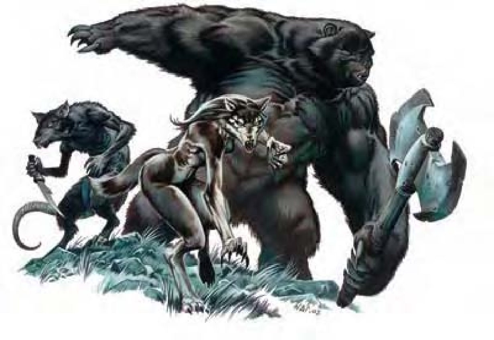

这笨重的人形生物全身披覆棕色长毛，还有长爪与熊一般的脸，其中一只熊掌握着巨斧。
熊人拥有结实、肌肉发达且多体毛的人形形态。他们有一头浓密的棕色头发，男性常蓄胡。他们的发色与熊形毛色相同，有红棕色、金色、象牙色或黑色。熊人喜欢穿着容易穿脱、修补或替换的朴素衣物与皮件。动物形态的熊人易怒且脾气暴躁，他们只想与同类来往或打击邪恶事物。
熊人的动物形态战法与棕熊相同。而人形或混合形则偏好又大又重的武器，如巨斧或巨剑。熊人的巨斧为中型武器，因此混合形可以单手持用巨斧。
化形 (超自然)：熊人可变身为棕熊或熊人混合形态。
理解熊 (特异)：熊或凶暴熊沟通时与魅力相关的检定获得+4种族加值。
兽化诅咒 (超自然)：任何被熊人 (混合形或动物形) 啮咬攻击咬中的人形生物或巨人必须通过强韧检定 (DC=15)，否则将感染兽化症。
精通擒抱 (特异)：如果熊人以熊形用爪抓击中对手，即可利用即时动作进行擒抱攻击，且不会引发对方借机攻击。
技能：熊形或混合形进行「游泳」检定时具有+4种族加值。
| 生命骰 | 1d8+1加6d8+30 (62HP) |
| 先攻 | +0 |
| 速度 | 30英尺 (6格) |
| 防御等级 | 15 (+2天生、+3镶嵌皮甲)、接触10、措手不及15 |
| 基本攻击/擒抱 | +5 / +6 |
| 攻击 | 巨斧+6近战 (1d12+1/x3)；或飞斧+5远程 (1d6+1) |
| 全力攻击 | 巨斧+6近战 (1d12+1/x3)；或飞斧+5远程 (1d6+1) |
| 占据/触及 | 5英尺 / 5英尺 |
| 特殊攻击 | ― |
| 特殊能力 | 化形、理解熊、昏暗视觉、灵敏嗅觉 |
| 豁免 | 强韧+8、反射+5、意志+4 |
| 属性 | 力量13、敏捷11、体质12、智力10、感知11、魅力8 |
| 技能 | 驯养动物+3、聆听+4、侦察+4、游泳+1 |
| 专长 | 坚韧、钢铁意志、多重攻击、猛力攻击、健跑、追踪 |
| 环境 | 寒冷带森林 |
| 组织 | 单独、成双、一家 (3-4) 或行列 (2-4，加上1-4只棕熊) |
| 宝藏 | 标准 |
| 阵营 | 总是守序善良 |
| 进化 | 视人物职业而定 |
| 等级修正值 | +3 |